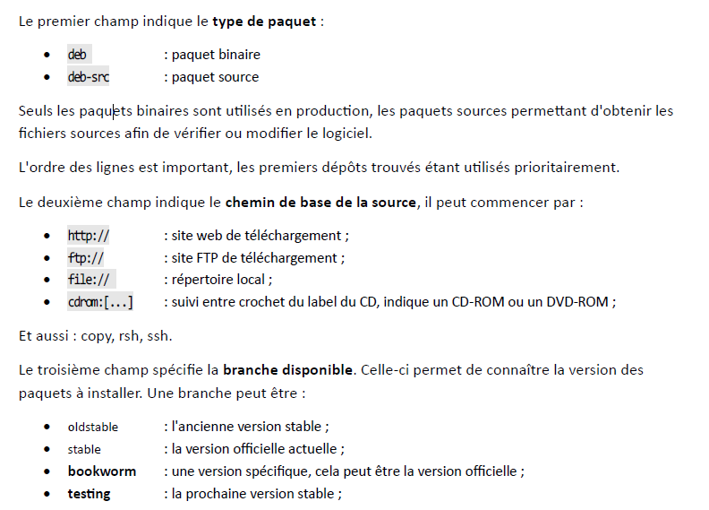

Gestion des paquets
Créée le mercredi 07 mai 2025
Gestion des dépots :
Les paquets logiciels, ainsi que leurs sources, sont disponibles sur Internet dans des dépôts (repository).
Lorsqu'une machine est installée, les dépôts officiels Debian sont automatiquement configurés, en fonction de la version installée, facilitant :
- La mise à jour de toute la distribution : la mise à jour pourra être une mise à jour de sécurité ou une mise à jour complète du système et de la totalité des paquets la composant ;
- L'installation de nouveaux paquets : il n'est pas nécessaire de chercher sur Internet un site de téléchargement pour l’installation des paquets, le gestionnaire de paquet s'en charge tout seul.
Il est parfois utile de modifier la configuration des dépôts, en fonction de ses besoins. Par exemple, la configuration de nouveaux dépôts permet l'installation de logiciels non fournis par Debian.
Bien sûr, il est possible de télécharger et installer un logiciel indépendamment, mais l'ajout du dépôt contenant ce logiciel présente des avantages certains :
- Mises à jour : la mise à jour du logiciel sera automatiquement prise en charge ;
- Gestion des dépendances : si l'installation du logiciel requiert des bibliothèques non standard, celle-ci seront incluses dans le dépôt et automatiquement installées.
Le fichier /etc/apt/sources.list contient la configuration des dépôts.

- main : paquets Debian standard, ils sont tous libres ;
- contrib : ces paquets sont libres mais dépendants de paquets qui ne le sont pas (vlc avec mp3)
- non-free-firmware : firmwares et pilotes non libres (mp3 etc)
- non-free : logiciels non libres
fichier source.list de base :
vim /etc/apt/sources.list
deb-src http://ftp.fr.debian.org/debian/ bookworm main
deb-src http://security.debian.org/debian-security bookworm-security main
deb-src http://ftp.fr.debian.org/debian/ bookworm-updates main
-Mettre à jour la base de données des paquets disponibles
apt update
-Faire la mise à jour
apt upgrade
ou
apt full-upgrade
-Rechercher un paquet
apt search <nom>
-Installer un paquet
apt install paquet
-Désinstaller un paquet
apt remove paquet
-Désintaller un paquet en supprimant les fichiers de configuration
apt purge paquet
- Nettoyer le dépôt local des fichiers téléchargés suite aux mises à jour et autres installations
apt clean
- Chercher un paquet qui correspond à une expression rationnelle :
apt search lightning
- Obtenir des informations détaillées sur un paquet :
apt show paquet